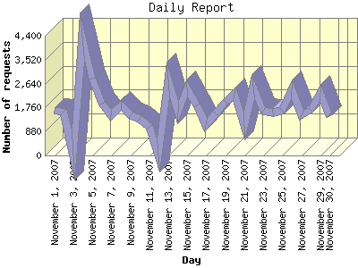

Report generated by Analog 6.0 and Report Magic 2.21
|
Web Server Statistics for "Harish Narayanan (hnarayan) - November 2007" Report generated by Analog 6.0 and Report Magic 2.21 |
The Daily Report identifies the activity for each day within the reporting period. Remember that one page hit can result in several server requests as the images for each page are loaded.

| Day | Number of requests | Number of bytes transferred | Percentage of the bytes | Percentage of the requests | |
|---|---|---|---|---|---|
| 1. | November 1, 2007 | 1,658 | 28.783 MB | 1.43% | 3.13% |
| 2. | November 2, 2007 | 1,618 | 99.135 MB | 4.93% | 3.06% |
| 3. | November 3, 2007 | 0 | 0.000 B | 0.00% | 0.00% |
| 4. | November 4, 2007 | 4,369 | 70.225 MB | 3.50% | 8.25% |
| 5. | November 5, 2007 | 2,840 | 76.445 MB | 3.81% | 5.36% |
| 6. | November 6, 2007 | 1,909 | 55.384 MB | 2.76% | 3.60% |
| 7. | November 7, 2007 | 1,481 | 46.442 MB | 2.31% | 2.80% |
| 8. | November 8, 2007 | 1,825 | 73.212 MB | 3.64% | 3.45% |
| 9. | November 9, 2007 | 1,486 | 68.947 MB | 3.43% | 2.81% |
| 10. | November 10, 2007 | 1,354 | 70.079 MB | 3.49% | 2.56% |
| 11. | November 11, 2007 | 1,047 | 38.935 MB | 1.94% | 1.98% |
| 12. | November 12, 2007 | 0 | 0.000 B | 0.00% | 0.00% |
| 13. | November 13, 2007 | 2,796 | 193.179 MB | 9.62% | 5.28% |
| 14. | November 14, 2007 | 1,574 | 39.568 MB | 1.97% | 2.97% |
| 15. | November 15, 2007 | 2,476 | 168.387 MB | 8.38% | 4.67% |
| 16. | November 16, 2007 | 1,825 | 61.566 MB | 3.06% | 3.45% |
| 17. | November 17, 2007 | 1,121 | 48.299 MB | 2.40% | 2.12% |
| 18. | November 18, 2007 | 1,555 | 96.357 MB | 4.80% | 2.94% |
| 19. | November 19, 2007 | 1,957 | 66.915 MB | 3.33% | 3.69% |
| 20. | November 20, 2007 | 2,261 | 77.372 MB | 3.85% | 4.27% |
| 21. | November 21, 2007 | 1,095 | 59.209 MB | 2.95% | 2.07% |
| 22. | November 22, 2007 | 2,534 | 112.167 MB | 5.58% | 4.78% |
| 23. | November 23, 2007 | 1,654 | 39.558 MB | 1.97% | 3.12% |
| 24. | November 24, 2007 | 1,566 | 32.673 MB | 1.63% | 2.96% |
| 25. | November 25, 2007 | 1,647 | 95.592 MB | 4.76% | 3.11% |
| 26. | November 26, 2007 | 2,416 | 58.892 MB | 2.93% | 4.56% |
| 27. | November 27, 2007 | 1,489 | 49.519 MB | 2.46% | 2.81% |
| 28. | November 28, 2007 | 1,678 | 43.732 MB | 2.18% | 3.17% |
| 29. | November 29, 2007 | 2,296 | 83.124 MB | 4.14% | 4.33% |
| 30. | November 30, 2007 | 1,440 | 55.320 MB | 2.75% | 2.72% |
Most active day November 13, 2007 : 542 pages sent. 4,369 requests handled. 73,636,444.00 served.
Daily average: 1,891 requests handled. 71.751 MB served.
This report was generated on December 5, 2007 12:38.
Report time frame November 1, 2007 00:00 to November 30, 2007 23:49.
| Web statistics report produced by: | |
 Analog 6.0 Analog 6.0 |  Report Magic 2.21 Report Magic 2.21 |